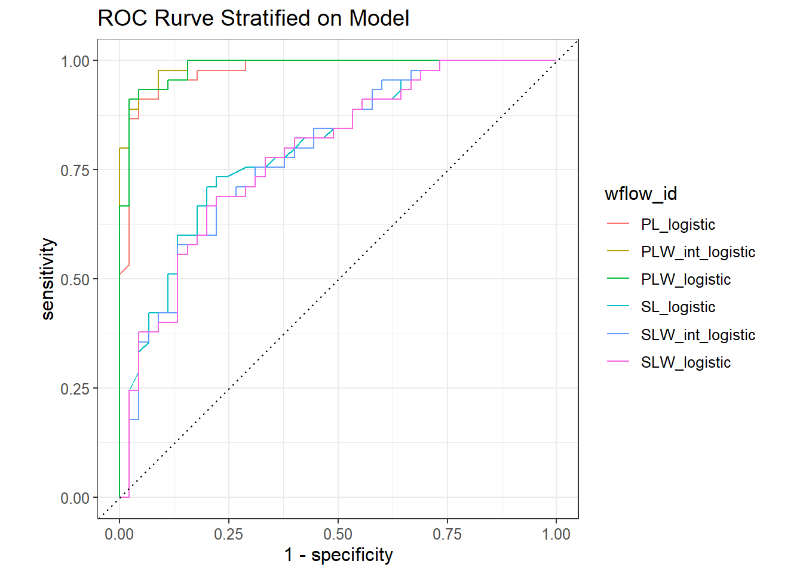

Show the code
set.seed(1337)
library("tidymodels")
tidymodels::tidymodels_prefer()
library("tidyposterior")
library("rstanarm")Set seed and load packages.
set.seed(1337)
library("tidymodels")
tidymodels::tidymodels_prefer()
library("tidyposterior")
library("rstanarm")Load data.
data("iris")
iris <- iris |>
tibble::as_tibble() |>
filter(Species != "setosa") |>
droplevels()
iris_split <- initial_split(iris, prop = 0.90)
iris_train <- training(iris_split)
iris_test <- testing(iris_split)The reasonings for, and theoretical aspects of, cross-validation (CV) are expected to be already known. In the tidymodels universe, CV is setup as:
iris_folds <- vfold_cv(iris_train,
v = 10)
iris_folds# 10-fold cross-validation
# A tibble: 10 × 2
splits id
<list> <chr>
1 <split [81/9]> Fold01
2 <split [81/9]> Fold02
3 <split [81/9]> Fold03
4 <split [81/9]> Fold04
5 <split [81/9]> Fold05
6 <split [81/9]> Fold06
7 <split [81/9]> Fold07
8 <split [81/9]> Fold08
9 <split [81/9]> Fold09
10 <split [81/9]> Fold10When it comes to modelling, creating and comparing multiple models is essential. This is easily achieved through the use of recipe() from the recipes package. A recipe is a collection of both a fomula and preprocessing steps. Here preprocessing steps is not applied, but could be: log-transforming data, creating dummy variables (e.g. one hot encoding) and sum up low occurring categories to handle class imbalance.
SL_rec <- recipe(Species ~ Sepal.Length,
data = iris_train)
SLW_rec <- recipe(Species ~ Sepal.Length + Sepal.Width,
data = iris_train)
SLW_int_rec <- recipe(Species ~ Sepal.Length + Sepal.Width,
data = iris_train) |>
step_interact(~ Sepal.Length:Sepal.Width)
PL_rec <- recipe(Species ~ Petal.Length,
data = iris_train)
PLW_rec <- recipe(Species ~ Petal.Length + Petal.Width,
data = iris_train)
PLW_int_rec <- recipe(Species ~ Petal.Length + Petal.Width,
data = iris_train) |>
step_interact(~ Petal.Length:Petal.Width)
recipe_list <- list(SL = SL_rec,
SLW = SLW_rec,
SLW_int = SLW_int_rec,
PL = PL_rec,
PLW = PLW_rec,
PLW_int = PLW_int_rec)
lg_models <- workflow_set(preproc = recipe_list,
models = list(logistic = logistic_reg()),
cross = FALSE)Each of the v folds are fitted with a purr-like workflow function:
# To save the predicted values and used workflows
keep_pred <- control_resamples(save_pred = TRUE, save_workflow = TRUE)
lg_models <- lg_models |>
workflow_map("fit_resamples",
resamples = iris_folds,
control = keep_pred,
seed = 1337)→ A | warning: glm.fit: fitted probabilities numerically 0 or 1 occurredThere were issues with some computations A: x1
There were issues with some computations A: x1lg_models# A workflow set/tibble: 6 × 4
wflow_id info option result
<chr> <list> <list> <list>
1 SL_logistic <tibble [1 × 4]> <opts[2]> <rsmp[+]>
2 SLW_logistic <tibble [1 × 4]> <opts[2]> <rsmp[+]>
3 SLW_int_logistic <tibble [1 × 4]> <opts[2]> <rsmp[+]>
4 PL_logistic <tibble [1 × 4]> <opts[2]> <rsmp[+]>
5 PLW_logistic <tibble [1 × 4]> <opts[2]> <rsmp[+]>
6 PLW_int_logistic <tibble [1 × 4]> <opts[2]> <rsmp[+]>Two simple evaluation metrics for logistic regressions are the accuracy and Area Under the Curve (AUC), it is implied that it is area under the Receiver Operating Characteristic (ROC) curve. To view these two evaluation metrics:
collect_metrics(lg_models) |>
select(-c(.config, preproc, .estimator)) |>
filter(.metric == "accuracy") |>
arrange(desc(mean))# A tibble: 6 × 6
wflow_id model .metric mean n std_err
<chr> <chr> <chr> <dbl> <int> <dbl>
1 PLW_int_logistic logistic_reg accuracy 0.933 10 0.0246
2 PL_logistic logistic_reg accuracy 0.922 10 0.0237
3 PLW_logistic logistic_reg accuracy 0.922 10 0.0289
4 SL_logistic logistic_reg accuracy 0.733 10 0.0296
5 SLW_logistic logistic_reg accuracy 0.722 10 0.0299
6 SLW_int_logistic logistic_reg accuracy 0.711 10 0.0339collect_metrics(lg_models) |>
select(-c(.config, preproc, .estimator)) |>
filter(.metric == "roc_auc") |>
arrange(desc(mean))# A tibble: 6 × 6
wflow_id model .metric mean n std_err
<chr> <chr> <chr> <dbl> <int> <dbl>
1 PL_logistic logistic_reg roc_auc 0.991 10 0.00458
2 PLW_logistic logistic_reg roc_auc 0.988 10 0.00825
3 PLW_int_logistic logistic_reg roc_auc 0.988 10 0.00825
4 SL_logistic logistic_reg roc_auc 0.800 10 0.0442
5 SLW_logistic logistic_reg roc_auc 0.787 10 0.0404
6 SLW_int_logistic logistic_reg roc_auc 0.776 10 0.0458 To illustrate the two metrics:
lg_models |>
autoplot(metric = "accuracy") +
geom_label(aes(label = wflow_id)) +
theme(legend.position = "none") +
xlim(c(0.5, 6.5)) +
ggtitle("Accuracy stratified on model")lg_models |>
collect_predictions() |>
group_by(wflow_id) |>
roc_curve(truth = Species,
.pred_versicolor) |>
autoplot() +
ggtitle("ROC curve statified on model")
All the models are tested on the same v-folds. In some cases, different models tends to perform well on the same folds - this effect is called a resample-to-resample component of variation. We can numerically investigate these correlations by correlating each model estimates with eachother:
lg_models |>
collect_metrics(summarize = FALSE) |>
filter(.metric == "accuracy") |>
select(wflow_id, .estimate, id) |>
pivot_wider(id_cols = "id",
names_from = "wflow_id",
values_from = ".estimate") |>
select(-id) |>
corrr::correlate(quiet = TRUE)# A tibble: 6 × 7
term SL_logistic SLW_logistic SLW_int_logistic PL_logistic PLW_logistic
<chr> <dbl> <dbl> <dbl> <dbl> <dbl>
1 SL_logistic NA 0.930 0.627 -0.547 0.0320
2 SLW_logist… 0.930 NA 0.812 -0.291 -0.0794
3 SLW_int_lo… 0.627 0.812 NA 0.136 0.112
4 PL_logistic -0.547 -0.291 0.136 NA -0.180
5 PLW_logist… 0.0320 -0.0794 0.112 -0.180 NA
6 PLW_int_lo… -0.0754 -0.187 0.0658 -0.0471 0.927
# ℹ 1 more variable: PLW_int_logistic <dbl>The correlation illustrated:
lg_models |>
collect_metrics(summarize = FALSE) |>
filter(.metric == "accuracy") |>
mutate(wflow_id = reorder(wflow_id,
.estimate)) |>
ggplot(aes(x = wflow_id,
y = .estimate,
group = id,
color = id)) +
geom_line(alpha = .5,
linewidth = 1.25) +
theme(legend.position = "none")
sessioninfo::session_info()─ Session info ───────────────────────────────────────────────────────────────
setting value
version R version 4.3.3 (2024-02-29 ucrt)
os Windows 11 x64 (build 22631)
system x86_64, mingw32
ui RTerm
language (EN)
collate English_United Kingdom.utf8
ctype English_United Kingdom.utf8
tz Europe/Copenhagen
date 2024-05-24
pandoc 3.1.11 @ C:/Program Files/RStudio/resources/app/bin/quarto/bin/tools/ (via rmarkdown)
─ Packages ───────────────────────────────────────────────────────────────────
! package * version date (UTC) lib source
abind 1.4-5 2016-07-21 [1] CRAN (R 4.3.1)
backports 1.4.1 2021-12-13 [1] CRAN (R 4.3.1)
base64enc 0.1-3 2015-07-28 [1] CRAN (R 4.3.1)
bayesplot 1.11.1 2024-02-15 [1] CRAN (R 4.3.3)
boot 1.3-29 2024-02-19 [2] CRAN (R 4.3.3)
broom * 1.0.5 2023-06-09 [1] CRAN (R 4.3.3)
cachem 1.0.8 2023-05-01 [1] CRAN (R 4.3.3)
checkmate 2.3.1 2023-12-04 [1] CRAN (R 4.3.3)
class 7.3-22 2023-05-03 [2] CRAN (R 4.3.3)
cli 3.6.2 2023-12-11 [1] CRAN (R 4.3.3)
codetools 0.2-19 2023-02-01 [2] CRAN (R 4.3.3)
colorspace 2.1-0 2023-01-23 [1] CRAN (R 4.3.3)
colourpicker 1.3.0 2023-08-21 [1] CRAN (R 4.3.3)
conflicted 1.2.0 2023-02-01 [1] CRAN (R 4.3.3)
corrr 0.4.4 2022-08-16 [1] CRAN (R 4.3.3)
crosstalk 1.2.1 2023-11-23 [1] CRAN (R 4.3.3)
data.table 1.15.4 2024-03-30 [1] CRAN (R 4.3.3)
dials * 1.2.1 2024-02-22 [1] CRAN (R 4.3.3)
DiceDesign 1.10 2023-12-07 [1] CRAN (R 4.3.3)
digest 0.6.35 2024-03-11 [1] CRAN (R 4.3.3)
distributional 0.4.0 2024-02-07 [1] CRAN (R 4.3.3)
dplyr * 1.1.4 2023-11-17 [1] CRAN (R 4.3.2)
DT 0.33 2024-04-04 [1] CRAN (R 4.3.3)
dygraphs 1.1.1.6 2018-07-11 [1] CRAN (R 4.3.3)
ellipsis 0.3.2 2021-04-29 [1] CRAN (R 4.3.3)
evaluate 0.23 2023-11-01 [1] CRAN (R 4.3.3)
fansi 1.0.6 2023-12-08 [1] CRAN (R 4.3.3)
farver 2.1.1 2022-07-06 [1] CRAN (R 4.3.3)
fastmap 1.1.1 2023-02-24 [1] CRAN (R 4.3.3)
foreach 1.5.2 2022-02-02 [1] CRAN (R 4.3.3)
furrr 0.3.1 2022-08-15 [1] CRAN (R 4.3.3)
future 1.33.2 2024-03-26 [1] CRAN (R 4.3.3)
future.apply 1.11.2 2024-03-28 [1] CRAN (R 4.3.3)
generics 0.1.3 2022-07-05 [1] CRAN (R 4.3.3)
ggplot2 * 3.5.1 2024-04-23 [1] CRAN (R 4.3.3)
globals 0.16.3 2024-03-08 [1] CRAN (R 4.3.3)
glue 1.7.0 2024-01-09 [1] CRAN (R 4.3.3)
gower 1.0.1 2022-12-22 [1] CRAN (R 4.3.1)
GPfit 1.0-8 2019-02-08 [1] CRAN (R 4.3.3)
gridExtra 2.3 2017-09-09 [1] CRAN (R 4.3.3)
gtable 0.3.5 2024-04-22 [1] CRAN (R 4.3.3)
gtools 3.9.5 2023-11-20 [1] CRAN (R 4.3.3)
hardhat 1.3.1 2024-02-02 [1] CRAN (R 4.3.3)
htmltools 0.5.8.1 2024-04-04 [1] CRAN (R 4.3.3)
htmlwidgets 1.6.4 2023-12-06 [1] CRAN (R 4.3.3)
httpuv 1.6.15 2024-03-26 [1] CRAN (R 4.3.3)
igraph 2.0.3 2024-03-13 [1] CRAN (R 4.3.3)
infer * 1.0.7 2024-03-25 [1] CRAN (R 4.3.3)
inline 0.3.19 2021-05-31 [1] CRAN (R 4.3.3)
ipred 0.9-14 2023-03-09 [1] CRAN (R 4.3.3)
iterators 1.0.14 2022-02-05 [1] CRAN (R 4.3.3)
jsonlite 1.8.8 2023-12-04 [1] CRAN (R 4.3.3)
knitr 1.46 2024-04-06 [1] CRAN (R 4.3.3)
labeling 0.4.3 2023-08-29 [1] CRAN (R 4.3.1)
later 1.3.2 2023-12-06 [1] CRAN (R 4.3.3)
lattice 0.22-5 2023-10-24 [2] CRAN (R 4.3.3)
lava 1.8.0 2024-03-05 [1] CRAN (R 4.3.3)
lhs 1.1.6 2022-12-17 [1] CRAN (R 4.3.3)
lifecycle 1.0.4 2023-11-07 [1] CRAN (R 4.3.3)
listenv 0.9.1 2024-01-29 [1] CRAN (R 4.3.3)
lme4 1.1-35.3 2024-04-16 [1] CRAN (R 4.3.3)
loo 2.7.0 2024-02-24 [1] CRAN (R 4.3.3)
lubridate 1.9.3 2023-09-27 [1] CRAN (R 4.3.3)
magrittr 2.0.3 2022-03-30 [1] CRAN (R 4.3.3)
markdown 1.12 2023-12-06 [1] CRAN (R 4.3.3)
MASS 7.3-60.0.1 2024-01-13 [2] CRAN (R 4.3.3)
Matrix 1.6-5 2024-01-11 [2] CRAN (R 4.3.3)
matrixStats 1.3.0 2024-04-11 [1] CRAN (R 4.3.3)
memoise 2.0.1 2021-11-26 [1] CRAN (R 4.3.3)
mime 0.12 2021-09-28 [1] CRAN (R 4.3.1)
miniUI 0.1.1.1 2018-05-18 [1] CRAN (R 4.3.3)
minqa 1.2.6 2023-09-11 [1] CRAN (R 4.3.3)
modeldata * 1.3.0 2024-01-21 [1] CRAN (R 4.3.3)
munsell 0.5.1 2024-04-01 [1] CRAN (R 4.3.3)
nlme 3.1-164 2023-11-27 [2] CRAN (R 4.3.3)
nloptr 2.0.3 2022-05-26 [1] CRAN (R 4.3.3)
nnet 7.3-19 2023-05-03 [2] CRAN (R 4.3.3)
parallelly 1.37.1 2024-02-29 [1] CRAN (R 4.3.3)
parsnip * 1.2.1 2024-03-22 [1] CRAN (R 4.3.3)
pillar 1.9.0 2023-03-22 [1] CRAN (R 4.3.3)
pkgbuild 1.4.4 2024-03-17 [1] CRAN (R 4.3.3)
pkgconfig 2.0.3 2019-09-22 [1] CRAN (R 4.3.3)
plyr 1.8.9 2023-10-02 [1] CRAN (R 4.3.3)
posterior 1.5.0 2023-10-31 [1] CRAN (R 4.3.3)
prodlim 2023.08.28 2023-08-28 [1] CRAN (R 4.3.3)
promises 1.3.0 2024-04-05 [1] CRAN (R 4.3.3)
purrr * 1.0.2 2023-08-10 [1] CRAN (R 4.3.3)
QuickJSR 1.1.3 2024-01-31 [1] CRAN (R 4.3.3)
R6 2.5.1 2021-08-19 [1] CRAN (R 4.3.3)
Rcpp * 1.0.12 2024-01-09 [1] CRAN (R 4.3.3)
D RcppParallel 5.1.7 2023-02-27 [1] CRAN (R 4.3.3)
recipes * 1.0.10 2024-02-18 [1] CRAN (R 4.3.3)
reshape2 1.4.4 2020-04-09 [1] CRAN (R 4.3.3)
rlang 1.1.3 2024-01-10 [1] CRAN (R 4.3.3)
rmarkdown 2.26 2024-03-05 [1] CRAN (R 4.3.3)
rpart 4.1.23 2023-12-05 [2] CRAN (R 4.3.3)
rsample * 1.2.1 2024-03-25 [1] CRAN (R 4.3.3)
rstan 2.32.6 2024-03-05 [1] CRAN (R 4.3.3)
rstanarm * 2.32.1 2024-01-18 [1] CRAN (R 4.3.3)
rstantools 2.4.0 2024-01-31 [1] CRAN (R 4.3.3)
rstudioapi 0.16.0 2024-03-24 [1] CRAN (R 4.3.3)
scales * 1.3.0 2023-11-28 [1] CRAN (R 4.3.3)
sessioninfo 1.2.2 2021-12-06 [1] CRAN (R 4.3.3)
shiny 1.8.1.1 2024-04-02 [1] CRAN (R 4.3.3)
shinyjs 2.1.0 2021-12-23 [1] CRAN (R 4.3.3)
shinystan 2.6.0 2022-03-03 [1] CRAN (R 4.3.3)
shinythemes 1.2.0 2021-01-25 [1] CRAN (R 4.3.3)
StanHeaders 2.32.6 2024-03-01 [1] CRAN (R 4.3.3)
stringi 1.8.3 2023-12-11 [1] CRAN (R 4.3.2)
stringr 1.5.1 2023-11-14 [1] CRAN (R 4.3.3)
survival 3.5-8 2024-02-14 [2] CRAN (R 4.3.3)
tensorA 0.36.2.1 2023-12-13 [1] CRAN (R 4.3.2)
threejs 0.3.3 2020-01-21 [1] CRAN (R 4.3.3)
tibble * 3.2.1 2023-03-20 [1] CRAN (R 4.3.3)
tidymodels * 1.2.0 2024-03-25 [1] CRAN (R 4.3.3)
tidyposterior * 1.0.1 2023-10-11 [1] CRAN (R 4.3.3)
tidyr * 1.3.1 2024-01-24 [1] CRAN (R 4.3.3)
tidyselect 1.2.1 2024-03-11 [1] CRAN (R 4.3.3)
timechange 0.3.0 2024-01-18 [1] CRAN (R 4.3.3)
timeDate 4032.109 2023-12-14 [1] CRAN (R 4.3.2)
tune * 1.2.1 2024-04-18 [1] CRAN (R 4.3.3)
utf8 1.2.4 2023-10-22 [1] CRAN (R 4.3.3)
vctrs 0.6.5 2023-12-01 [1] CRAN (R 4.3.3)
withr 3.0.0 2024-01-16 [1] CRAN (R 4.3.3)
workflows * 1.1.4 2024-02-19 [1] CRAN (R 4.3.3)
workflowsets * 1.1.0 2024-03-21 [1] CRAN (R 4.3.3)
xfun 0.43 2024-03-25 [1] CRAN (R 4.3.3)
xtable 1.8-4 2019-04-21 [1] CRAN (R 4.3.3)
xts 0.13.2 2024-01-21 [1] CRAN (R 4.3.3)
yaml 2.3.8 2023-12-11 [1] CRAN (R 4.3.2)
yardstick * 1.3.1 2024-03-21 [1] CRAN (R 4.3.3)
zoo 1.8-12 2023-04-13 [1] CRAN (R 4.3.3)
[1] C:/Users/Willi/AppData/Local/R/win-library/4.3
[2] C:/Program Files/R/R-4.3.3/library
D ── DLL MD5 mismatch, broken installation.
──────────────────────────────────────────────────────────────────────────────